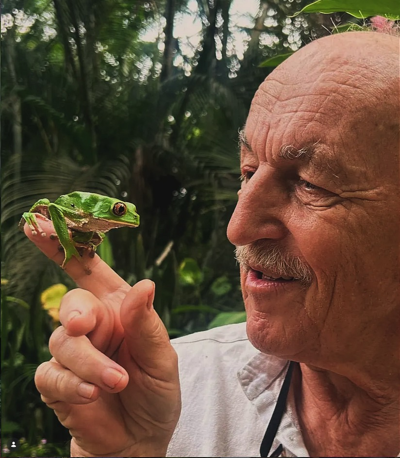
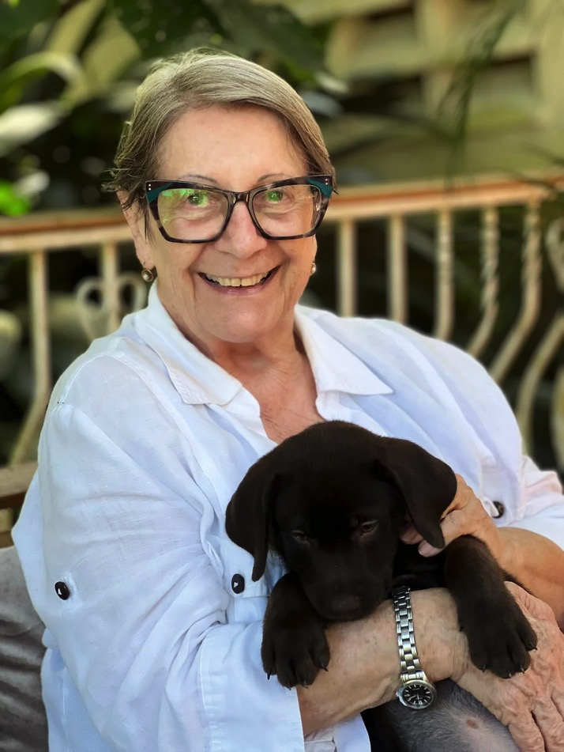

Historia de Norbert:
El Científico que se Convirtió en Bosque
Un viaje desde los laboratorios de Alemania hasta las cumbres cubiertas de niebla de Bejuma.
Raíces Alemanas
Nacido en el corazón académico de Alemania, la infancia de Norbert Flauger estuvo definida por el estudio silencioso del micromundo. Mientras otros buscaban el rugido industrial de la Europa de la posguerra, Norbert encontró consuelo en la intrincada anatomía de los escarabajos y el delicado polvo de las alas de las polillas nocturnas.
Su temprana carrera en entomología lo llevó a través de prestigiosas instituciones, aunque sentía una atracción hacia lo indómito. A finales de la década de 1970, armado con poco más que un kit de especímenes y una curiosidad insaciable, abordó un avión hacia Venezuela, una decisión que alteraría para siempre la ecología de un pequeño valle en Bejuma.

La Transformación
Primeros árboles
Al llegar a una parcela despejada de pastos para ganado, Norbert comenzó el minucioso proceso de reforestación. Cada plántula fue documentada, cada cambio en el suelo registrado.

Construcción de la Posada
Casa María nació, no como un hotel, sino como un laboratorio viviente donde los huéspedes podían dormir entre los mismos experimentos que Norbert realizaba en el dosel forestal.

Reconocimiento Científico
El bosque alcanzó su madurez. Universidades internacionales comenzaron a visitarlo para estudiar las raras especies que Norbert había logrado preservar exitosamente en la propiedad.

Legado Científico
Una mirada al interior de la colección Flauger: catalogando las joyas ocultas del bosque nuboso.

Dynastes hercules
Registro #0842

Greta oto
Registro #1105

Cattleya mossiae
Registro #0219

"No heredamos la tierra de nuestros ancestros; la tomamos prestada de nuestros hijos. Pero en Bejuma, no solo la estamos pidiendo prestada; la estamos haciendo crecer de nuevo, hoja por hoja."— Norbert Flauger

El Archivo Vivo
Hoy, la visión de Norbert es continuada por su familia. La posada ha evolucionado hacia un santuario donde la conservación se encuentra con la comodidad, asegurando que los registros científicos sigan creciendo mientras se ofrece una ventana al bosque para viajeros de todo el mundo.